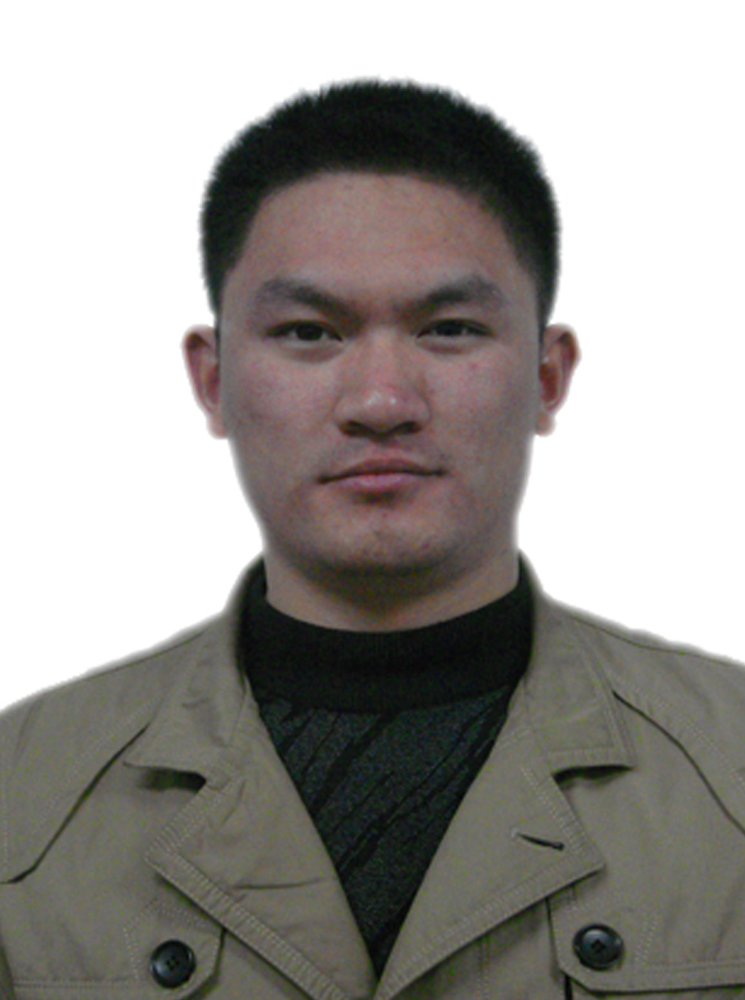

Laboratory of Cross-Layer Wireless Transmission Optimization
(C-WTO Lab) , Dalian University of Technology

The Laboratory of Cross-Layer Wireless Transmission Optimization(C-WTO Lab) , a specialized laboratory, has been established for supporting the researches of wireless networks and cloud computing in Dalian University of Technology. The Laboratory is led by Sun Weifeng who is an associate professor,majoring in the research of the Wireless networks, cloud computing, the user recommendation system, wireless intelligent search recommendation algorithm and focusing on the research and development of ICP patent .it has formed its own characteristics and makes an remarkable achievements in scientific research. The teaching level is outstanding and it has created a lot of high-level professionals in the same industry at home and abroad .Now there are four Master degree graduates and some of the undergraduates .
The Laboratory majoring in new research of the network oriented a new frontier in Cyberscience and explored the network technology application in the study of new ideas and new methods.Over the years.The laboratory has achieved good results,for example we have published a lot of papers in conference and the journal.


Dr.WeiFeng Sun received the Bachelor degree in Computer Science from University of Science and Technology of China, China, in 2002 and the Ph.D. degree in Computer Science Department, from University of Science and Technology of China,China, in 2007.He is currently a associate professor in School of Software of Dalian University of Technology, China. His research interests include: Cyber Physical System, wireless network and mobile computing,Grid and Cloud Computing,QoS in networks,AI in network protocol,wireless intelligent search recommendation algorithm.
Dr.WeiFeng Sun is an Editor of IJIIP, IJIPM.He is also the Reviewer of CJE, ACTA ELETRONICA SINICA(in Chinese), Computer Engineering and Applications (in Chinese). He serves as General Chair of EMECC 2012 and Session Chair of ICNC’12, P2MNET 2012.He is a Program Committee Member of U-Healthcare 2011, C3HetNet 2011, IADIS TNS 2011,ICIMM2011，ICMME 2011, MSC2011, CPSCOM 2011，ICDT12，ECICE 2012，ICIPM2012，C3HetNet 2012，ICCIT 2012，MCCSIS 2012, CICIM2012, ICDT 2013.
| Ning Zhang 2012 Sessoion Cloud computing/Task scheduling in Grid computing/Copy of the policy E-mail:zhangning.dlut AT gmail.com |
 | HaoTian Wang 2012 Sessoion Wireless Network Email:wanghaotian AT mail.dlut.edu.cn |
|
| QingQing Zhang 2013 Sessoion Wireless Network/Cloud Computing E-mail:1165331393 AT qq.com |
XiaoMin Han 2013 Sessoion Wireless Network/Cloud Computing E-mail:1191050942 AT qq.com |
||
|  | ZhenXing Ji 2014 Sessoion(Postgraduate Recommendation) E-mail:jason_dreaming AT qq.com |
Jianli Sun 2014 Sessoion E-mail:1107566703 AT qq.com |
|
 | Xianglan Piao 2014 Sessoion E-mail:scorpio.2010 AT qq.com |
Wireless networks allows the user to establish data network of wireless connection.Wireless networks include: Wireless
Personal Network (WPAN), Wireless Area Network , Wireless metropolitan Area Network.
Cloud computing is a model for enabling convenient, on-demand network access to a shared pool of configurable computing
resources (e.g., networks, servers, storage, applications, and services) that can be rapidly provisioned and released with minimal
management effort or service provider interaction.
In social networks,the system recommend the user the information of interest for more personalized recommendation service.
In the wireless network,when users search for information ,the algorithm recommends information to the wireless users
intelligently.it will provide a better search experience for wireless users.
The research project as shown below: